Three dark directions
Unapproved design concepts · static drawings · illustrative content · not app screenshots.
Same post, same destinations, same flow: choose, write, review. A · Caption, B · Contact Sheet, C · Margin Night. Dispatch is excluded. Notes, guidance, recommendation and checks are in README.md.
Caption: remaining screens (unapproved concept)
Choose, Bluesky version, Review, first run, library, accounts, publishing states and finishing Instagram. Notes and checks are in README.md.
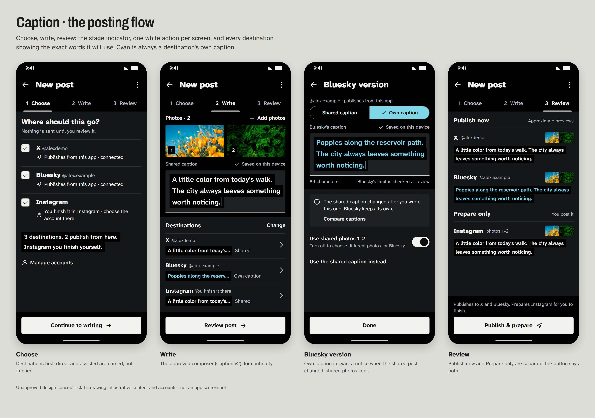
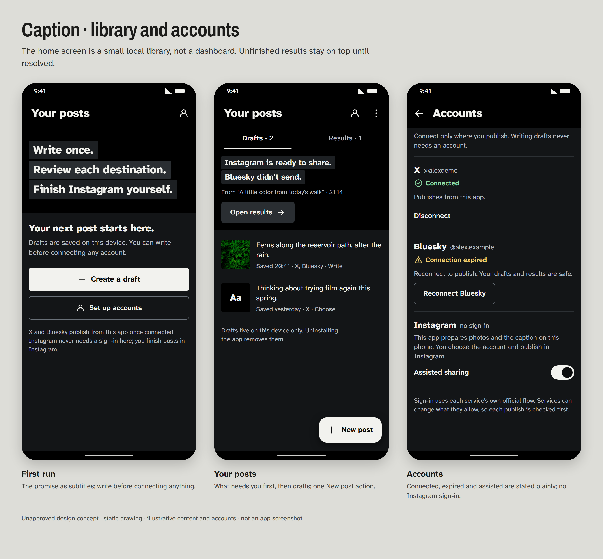
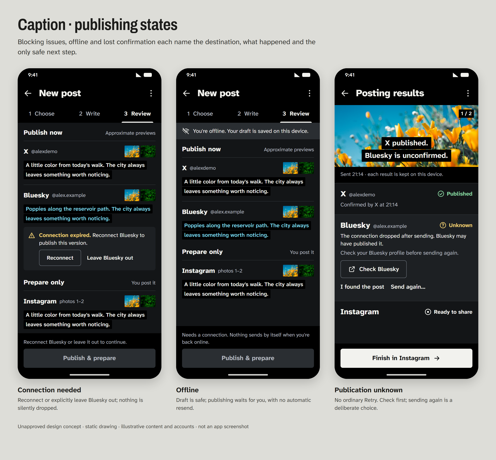
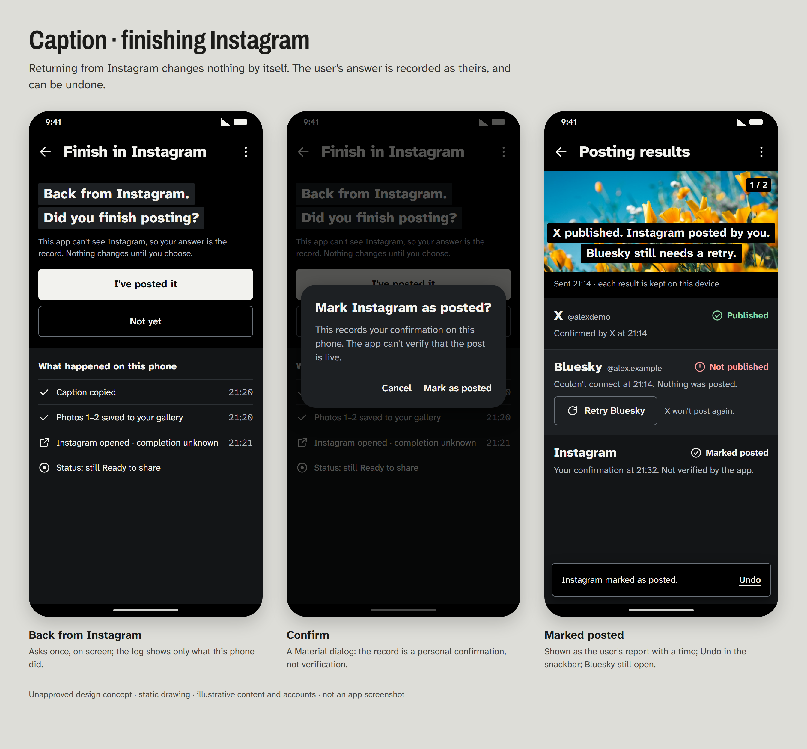
Caption, with more flair (current refinement)
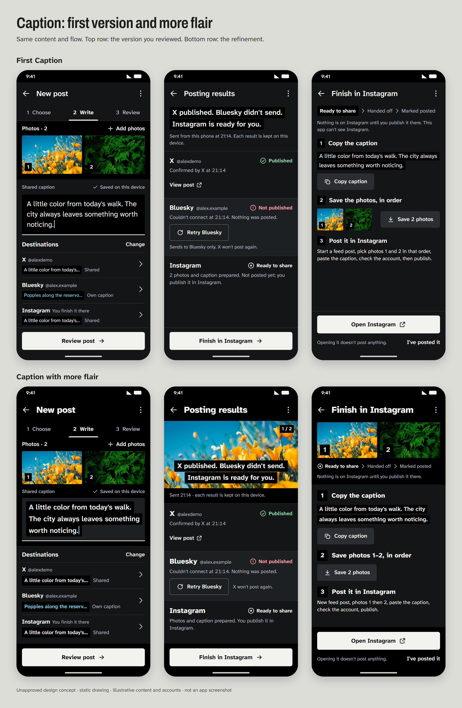
Composer
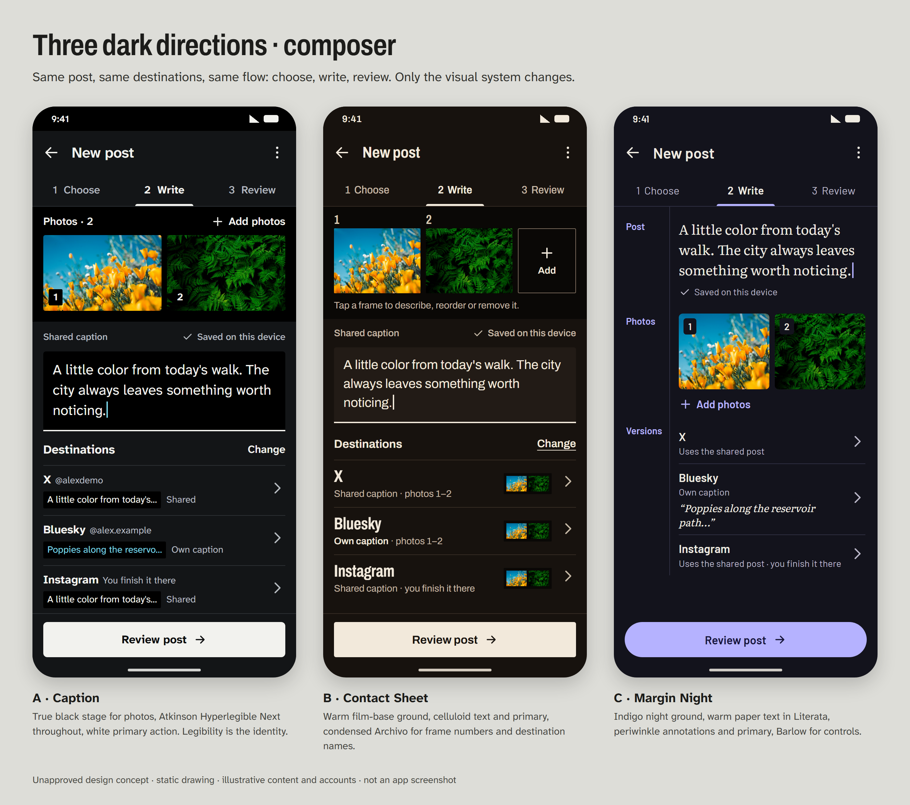
Posting results: partial success
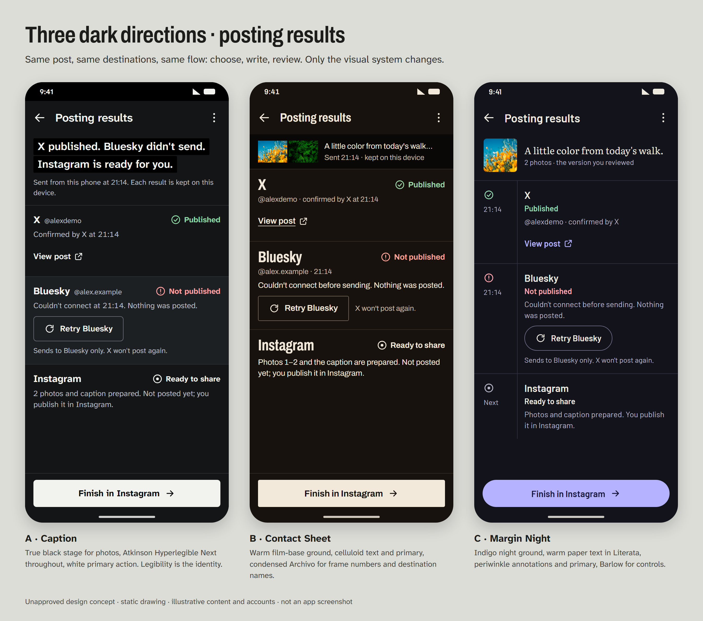
Assisted Instagram
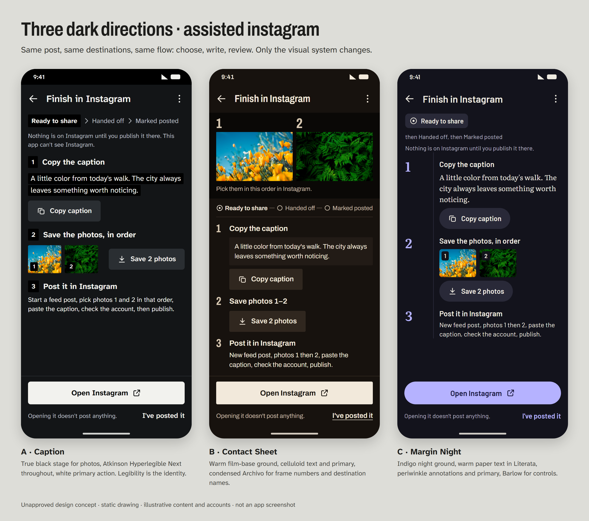
A · Caption
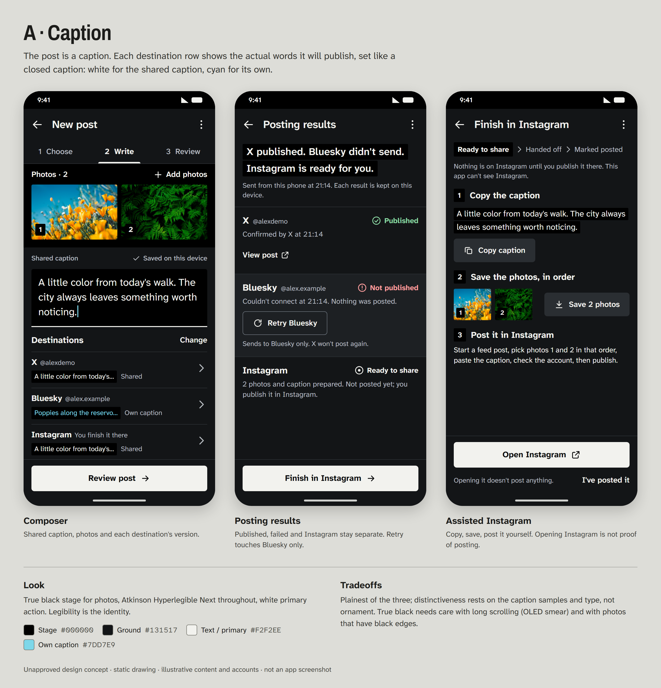
B · Contact Sheet
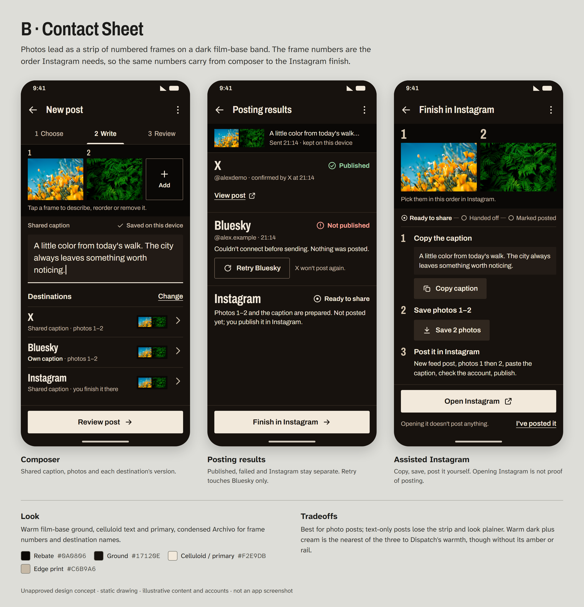
C · Margin Night
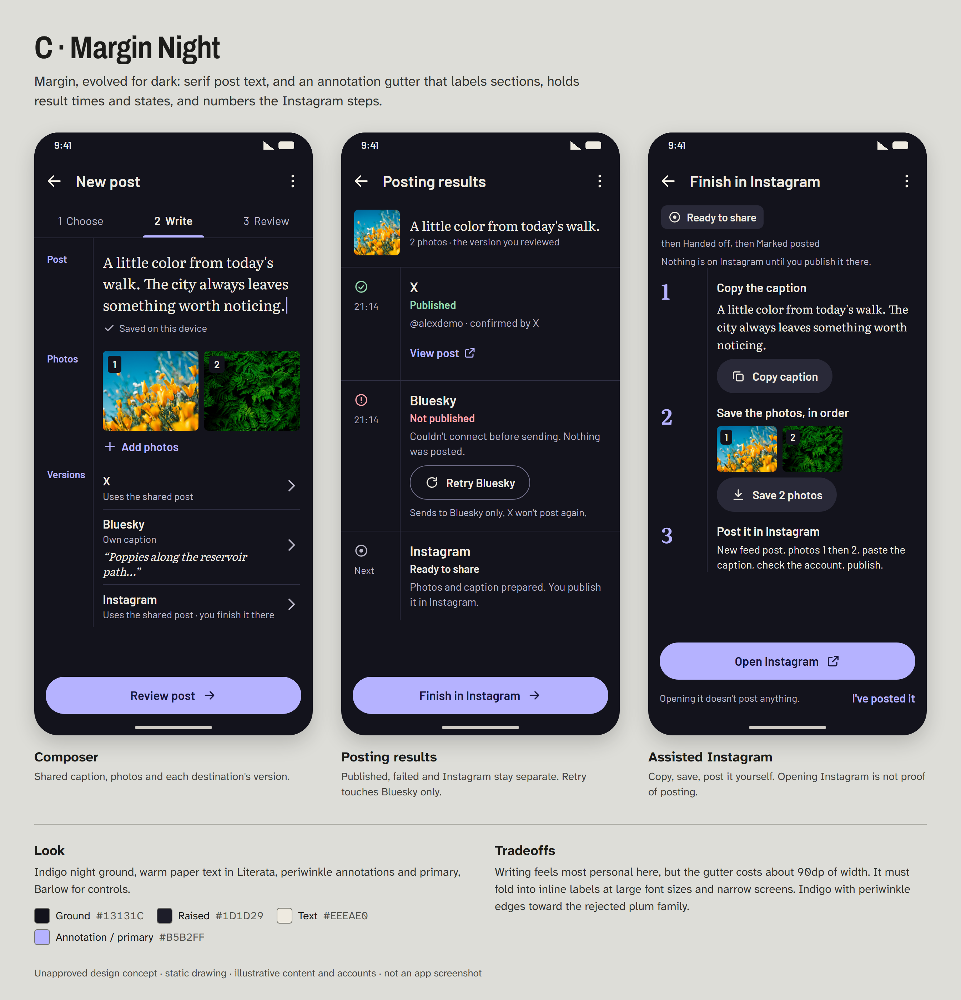